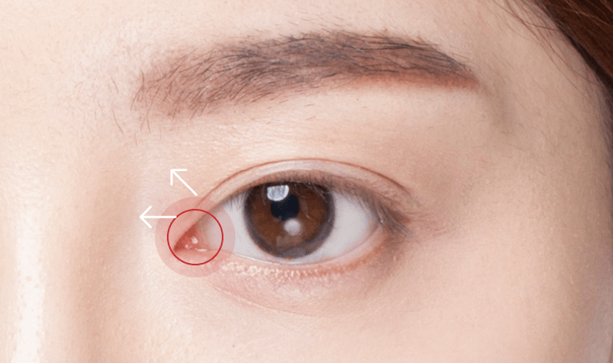
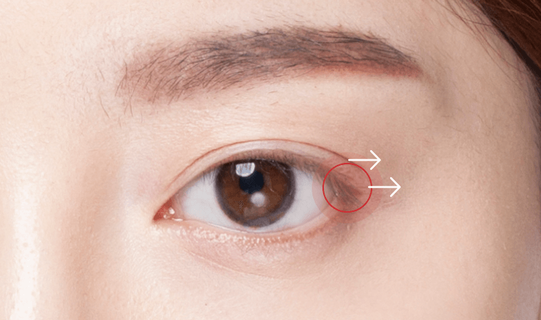
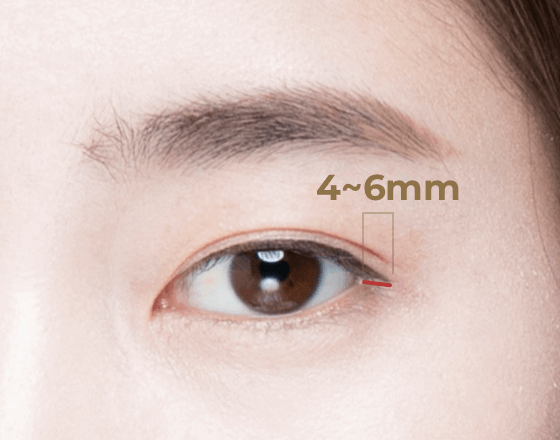
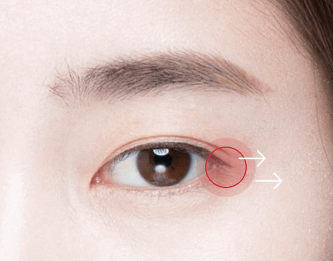

시원하고 자연스러운
#트임 성형
[뒷트임]
-

수술 시간
1시간
-

마취방법
수면/국소마취
-

실밥제거
4~7일 후
-

내원치료
1~2회
-

회복기간
개인차 있음
트임 성형이란?
눈의 가로 길이가 짧거나 눈 안쪽이 피부에 덮여 답답해 보이는 경우
시원하고 부드러운 눈매를 갖기 위하여 트임성형을 시행합니다.
BEFORE

AFTER

-

앞트임
- 몽고주름이 있는 경우
- 눈 사이가 멀어보이는 답답한 느낌이 있는 경우
-

뒷트임
-
눈의 가로길이가 짧고 앞트임이
불가능하거나 앞트임만으로는
효과가 부족한 경우
-
눈의 가로길이가 짧고 앞트임이
-
밑트임
-
눈꼬리가눈안쪽보다 10도 정도
위쪽으로 향해있는 경우가 가장 이상적
이보다 가파르게 올라가 사나워보이거나
눈꼬리부분이 좁아 보이는 경우
-
눈꼬리가눈안쪽보다 10도 정도
붙지않는 뒤트임 original article
본원의 검판 회전법을 이용한 붙지않는 뒤트임 방법은
미국 SCI급 학술지인 ＇Journal of Craniofacial Surgery＇에서 Original article 인정받았습니다.
대부분의 뒤트임은 외안각을 절단하여 시행하고 대부분의 합병증은 여기서 발생합니다.
통상적인 뒤트임 방법은 확장된 외측길이 부분은 검판(단단한 판)이 없어 층이져 보이고 자연스럽지 못했습니다.
특히 뒤트임 후 발생한 여러 합병증의 복원수술에 이용될 수 있는 획기적인 방법입니다.

트임성형
수술방법
검판회전
뒷트임
미국성형외과학회지 발표
original article 인정 [ 2016년 11월 ]
눈의 가로폭을 약 5미리 정도 확장하여 시원한 눈매를 만들 수 있는 수술
뒷트임의 부작용이 생길 수도 있는 외안각 절단 및 골막고정법을 피하고
검판을 분리하여 연장된 뒷트임 공간을 보강해주는 붙지않는 뒷트임법으로
부작용을 예방하고 선한 눈매를 유지할 수 있습니다.
-
1
정밀 진단 후
모양을 디자인합니다. -

2
절막을 제거한 뒤
눈 안쪽으로 봉합합니다. -

3
눈을 정상적으로 뜰 수
있도록 근육의 장력을
조절하여 당겨줍니다. -

3
자연스럽고 아름다운
눈을 완성합니다.
트임성형 핵심포인트
시원하고 또렷한 눈매를 위해 연세자연미는
자세한 상담과 진단을 통해 가장 효과적인
방법으로 수술을 진행합니다.


개인마다 다른 얼굴 구조나 피부 특성에
따라 적합한 수술방벙으로 1:1 맞춤
수술을 시행합니다.